令和五年 大学入学共通テスト本試験 政治・経済
第１問
※全く見る価値のないリード文省略
問１
下線部a【資本主義経済の成立】下線部に関連して、生徒Xは、資本主義経済の成立と発展の概要について考察するためにキーワードを整理し、次のノートにまとめた。ノート中の下線部ア～エのうち誤っているものを、後の①～④のうちから一つ選べ。
○産業革命
18世紀後半にイギリスで産業革命が起こり、その後、他のヨーロッパ諸国やアメリカ、そして日本でも産業革命が起こった。産業革命によって、工場制手工業から工場制機械工業へと発展し、生産力が飛躍的に高まった。
○私有制
（ア）生産手段を私有できることで、資本蓄積への意欲が高められる。
○市場経済
（イ）市場での自由な取引を通じて企業は利潤を追求し、その利潤がさらなる設備投資の資金となって経済が成長する。
○階級分化
資本主義経済下では、生産手段を所有する者と所有しない者、つまり資本家と労働者への階級分化が生じる。これが資本主義経済において経済格差が発生する要因の一つとなる。（ウ）マルクスは資本主義経済を分析し、資本家と労働者との間の利害の対立構造を明らかにした。
○景気循環(景気変動)
資本主義経済の発展によって、生活が豊かになる一方で、景気循環による不況や恐慌の発生という問題が起こる。（エ）ケインズは資本主義経済下での不況の原因は供給能力の不足にあるとの理論を示した。
①下線部ア ②下線部イ ③下線部ウ ④下線部エ
問２
下線部b【東アジア諸国】に関連して、生徒Xは、日本、韓国、中国の経済発展に関心をもち、これら3か国の2000年、2010年および2020年の実質GDP成長率、一人当たり実質GDP、一般政府総債務残高の対GDP比を調べ、次の表にまとめた。表中のA～C国はこれら3か国のいずれかである。後の記述ア～ウは、これら3か国についてそれぞれ説明したものである。A～C国と記述ア～ウの組合せとして最も適当なものを、後の①～⑥のうちから一つ選べ。
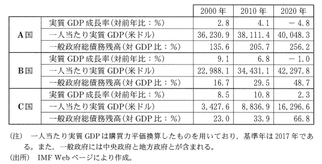
ア この国は、1978年からの改革開放政策の下で、外資導入などにより経済成長を続けてきた。この国の経済運営方針は、低・中所得国にとって、一つの経済発展モデルになっている。
イ この国は、1960年代から工業化による経済成長が進み、NIESの一つに数えられた。その後、アジア通貨危機による経済危機も克服し、現在はアジア有数の高所得国となっている。
ウ この国は、1950年代から1973年頃まで高度経済成長を遂げ、急速に欧米の先進国に追いついた。しかし、1990年代以降は低成長が常態化しており、政府部門の累積赤字の拡大が議論の的となっている
①A国─アB国─イC国─ウ ②A国─アB国─ウC国─イ
③A国─イB国—アC国─ウ ④A国─イB国─ウC国─ア
⑤A国─ウB国—アC国─イ ⑥A国─ウB国─イC国―ア
＃2010年以降の国際経済 ＃高度経済成長期
問３
下線部c【日本の各産業の輸出状況】に関連して、生徒Xは、どのような財をどの程度輸出しているかを調べることによって、その国の経済構造の特徴を知ることができると考えた。そこで、2018年のデータとそれまでの各国の経済の動きをもとに、日本、中国、ナイジェリア、ロシアの貿易輸出品の主要3品目(主要品目の輸出額の輸出総額に占める割合)を示す次の表ア～エと、これらの国の経済的特徴をまとめた後の資料を作成した。資料を踏まえて表アに該当する国として正しいもの後の①～④のうちから一つ選べ。
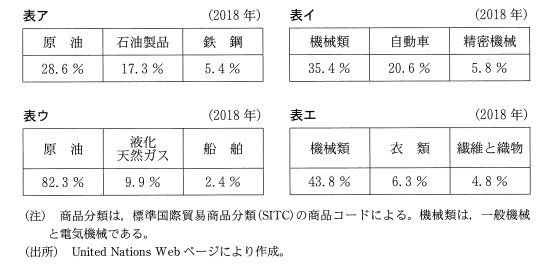
資料
日本は、高度成長期以来、加工貿易型で経済発展してきた。中国は、経済特区を設けるなどして工業化を進め「世界の工場」といわれるほど発展し、アメリカに次ぐ経済規模の国になった。ロシアは、天然資源が多く、エネルギー価格の高騰を戦略的に活用し、2000年代に入ると鉱工業生産を伸ばした。ナイジェリアは、アフリカの中では経済規模が大きく人口も多いが、ODA(政府開発援助)を受け入れている発展途上国であり、モノカルチャー経済の特徴を示している。
①日本 ②中国 ③ナイジェリア ④ロシア
＃現代文問題 ＃ソ連の死とロシアの復活
問４
下線部d【地球温暖化対策】に関連して、生徒Xは、日本の地球温暖化対策に関心をもち、次の資料を作成した。資料中の空欄［ ア ］には後の記述aかb、空欄［ イ ］には後の記述cかd、空欄［ ウ ］には資料中の図eか図fの［ イ ］ずれかが当てはまる。空欄［ ア ］～［ ウ ］に当てはまるものの組合せとして正し［ イ ］もの後の①～⑧の［ ウ ］ちから一つ選べ。
政府は、2020年10月、2050年までに二酸化炭素などの温室効果ガスの排出を日本全体として実質ゼロにすると宣言した。この宣言の意味は、化石燃料に替わる新たなエネルギーや新技術の開発などを進めることにより［ ア ］ということであった。
日本のこれまでの温室効果ガス排出削減対策をみると、2012年に固定価格買取制度が導入された。この制度は、［ イ ］を対象としている。その影響を調べるために、2012年以降の発電電力量のデータをもとに次の図eと図fを作成した。図eと図fはそれぞれ、2012年と2019年のいずれかのものである。
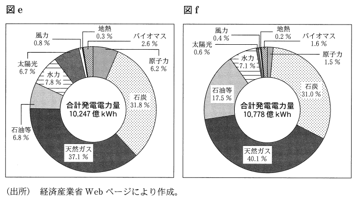
これらの図から、化石燃料による発電電力量の比率が合計発電電力量の75%以上も占めていることがわかる。さらに、電力以外のエネルギー利用からの温室効果ガス排出も含めて考えると、政府目標を達成する道のりはけわしいといえる。ただし、固定価格買取制度の影響は、電源別発電電力量の比率から読みとることができる。2019年の図は［ ウ ］となる。
［ ア ］に当てはまる記述
a温室効果ガスを排出するエネルギーの使用をゼロにする
b温室効果ガスの排出量と植物などによる吸収量との間の均衡を達成する
［ イ ］に当てはまる記述
c再生可能エネルギーによる発電
d原子力エネルギーによる発電
①ア―a イ―c ウ―図e ②ア―a イ―c ウ―図f
③ア―a イ―d ウ―図e ④ア―a イ―d ウ―図f
⑤ア―b イ―c ウ―図e ⑥ア―b イ―c ウ―図f
⑦ア―b イ―d ウ―図e ⑧ア―b イ―d ウ―図f
＃現代文問題 ＃公害問題、環境問題
問５
下線部e【国民の権利と義務】に関連して、生徒Xと生徒は、日本国憲法における権利と義務の規定について話し合っている。次の会話文中の空欄［ア］には後の記述aかb、空欄［イ］には後の記述cかdのいずれかが当てはまる。空欄［ア］［イ］に当てはまるものの組合せとして最も適当なものを、後の①～④のうちから一つ選べ。
X：憲法は、第3章で国民の権利および義務を規定しているね。立憲主義は国民の権利や自由を保障することを目標とするけど、こうした立憲主義はどのように実現されるのかな。
Y：憲法第99条は、憲法尊重擁護義務を、［ア］。このほか、憲法第81条が定める違憲審査制も立憲主義の実現のための制度だよね。
X：憲法は国民の個別的な義務に関しても定めているね。これらの規定はそれぞれどう理解すればいいのかな。
Y：たとえば憲法第30条が定める納税の義務に関しては、［イ］。
［ア］に当てはまる記述
a公務員に負わせているね。このような義務を規定したのは、公権力に関与する立場にある者が憲法を遵守すべきことを明らかにするためだよ
bすべての国民に負わせているね。このような義務を規定したのは、人類の成果としての権利や自由を国民が尊重し合うためだよ
［イ］に当てはまる記述
c新たに国税を課したり現行の国税を変更したりするには法律に基づかねばならないから、憲法によって義務が具体的に発生しているわけではないね
d財政上必要な場合は法律の定めなしに国税を徴収することができるので、憲法によって義務が具体的に発生しているね
①ア―a イ―c ②ア―a イ―d ③ア―b イ―c ④ア―b イ―d
＃現代文問題
問６
下線部f【日本の国際収支】について、貿易や海外投資の動向に関心をもった生徒は、日本の国際収支を調べ、その一部の項目を抜き出して次の表を作成した。表中のA、B、Cは、それぞれ1998年、2008年、2018年のいずれかの年を示している。表に関する後の記述ア〜ウのうち、正しいものはどれか。当てはまるものをすべて選び、その組合せとして最も適当なものを、後の①～⑦のうちから一つ選べ。
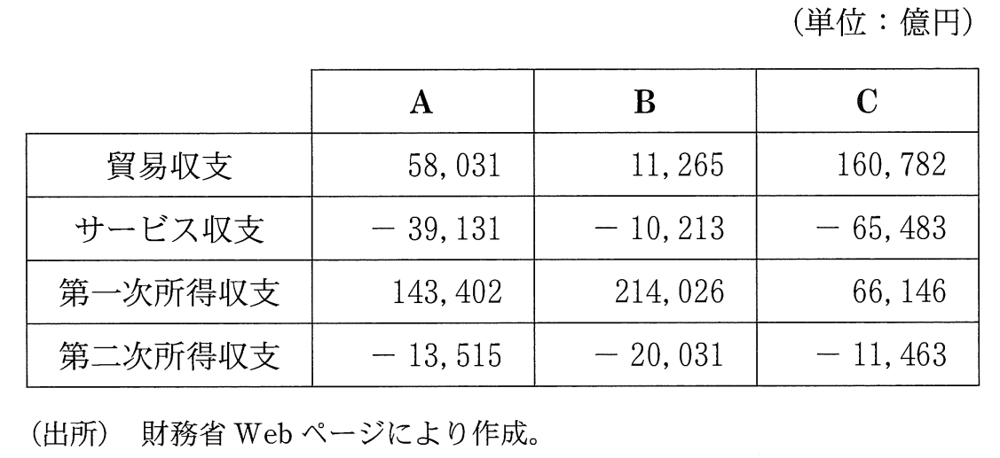
ア A、B、Cにおいて経常収支に対する第一次所得収支の比率が一番大きいのはBである。
イ A、B、Cを貿易サービス収支額の小さいものから順に並べると、A→B→Cの順になる。
ウ A、B、Cを年代の古いものから順に並べると、C→A→Bの順になる。
①ア ②イ ③ウ ④アとイ ⑤アとウ ⑥イとウ ⑦アとイとウ
＃国際経済 ＃計算問題
問７
下線部g【公正取引委員会】に関心をもった生徒Xと生徒Yは、私的独占の禁止及び公正取引の確保に関する法律(独占禁止法)の次の条文について話し合っている。後の会話文中の空欄［ ア ］には後の語句aかb、空欄［ イ ］には後の記述cかdのいずれかが当てはまる。空欄［ ア ］［ イ ］に当てはまるものの組合せとして最も適当なものを、後の①～④のうちから一つ選べ。
第27条第2項 公正取引委員会は、内閣総理大臣の所轄に属する。
第28条 公正取引委員会の委員長及び委員は、独立してその職権を行う。
第29条第2項 委員長及び委員は、年齢が35年以上で、法律又は経済に関する学識経験のある者のうちから、内閣総理大臣が、両議院の同意を得て、これを任命する。
Y：日本国憲法第65条に「行政権は、内閣に属する」とあるけど、［ ア ］である公正取引委員会は、内閣から独立した機関といわれるね。行政活動を行う公正取引委員会が内閣から独立しているのは憲法上問題がないのかな。
X：独占禁止法の条文をみると、「独立してその職権を行う」とされているけど、委員長及び委員の任命については、［ イ ］。公正取引委員会は、内閣から完全に独立しているわけではないよ。公正取引委員会の合憲性を考えるときには、独立性が必要な理由や民主的コントロールの必要性も踏まえて、どの程度の独立性を認めることが適切かを考える必要がありそうだね。
［ ア ］に当てはまる語句
a独立行政法人
b行政委員会
［ イ ］に当てはまる記述
c両議院による同意を要件としつつも内閣総理大臣に任命権があるね
d内閣総理大臣が単独で任意に行うことができるね
＃現代文問題 ＃行政府（内閣）
問８
下線部g【国家公務員】に関連して、生徒は、日本の公務員数の推移を調べた。次の図は、国家公務員等予算定員の5年ごとの推移を示したものである。図に関する記述として誤っているものを、後の①～④のうちから一つ選べ。
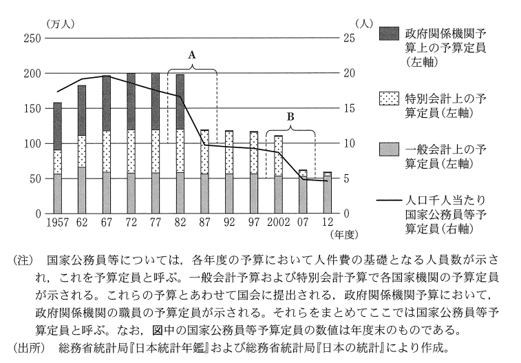
①図中の期間を通してみると、第一次石油危機より前に、人口千人当たり国家公務員等予算定員が減少に転じていることがわかる。
②図中の期間を通してみると、日本の国家公務員等予算定員の減少分の内訳としては、一般会計上の予算定員の減少が最大の要素であることがわかる。
③図中のAが示す期間に電電公社、専売公社、国鉄の民営化が行われた。
④図中のBが示す期間に郵政民営化が行われた。
＃現代文問題
第２問
※全く見る価値のないリード文省略
問１
生徒は、下線部a【都市の過密化と地方の過疎化】について調べた。日本における都市の過密化と地方の過疎化の経緯や現状、対応策に関する記述として誤っているものを、次の①～④のうちから一つ選べ。
①地方から都市への大規模な人口移動に伴う過密過疎の問題が生じたのは、バブル経済が崩壊し平成不況に入ってからである。
②少子高齢化が進む中で、人口が減少し高齢者の人口の割合が半数以上に達したことで社会的な共同生活の維持が困難になった集落が出現している。
③まち・ひと・しごと創生法が制定され、国や各地方公共団体では個性豊かで魅力ある地域社会づくりに向けた政策が進められている。
④地方の人口減少や高齢化への対応策として生活に必要な機能を中心市街地に集中させることなどを行う、コンパクトシティという考え方がある。
＃日本経済テーマ史
問２
生徒は、下線部b【地方財政】について学習を進めた。日本の地方財政に関する記述として最も適当なものを、次の①～④のうちから一つ選べ。
①地方公共団体における財政の健全化に関する法律が制定されたが、財政再生団体に指定された地方公共団体はこれまでのところない。
②出身地でなくても、任意の地方公共団体に寄付をすると、その額に応じて所得税や消費税が軽減されるふるさと納税という仕組みがある。
③所得税や法人税などの国税の一定割合が地方公共団体に配分される地方交付税は、使途を限定されずに交付される。
④地方公共団体が地方債を発行するに際しては、増発して財政破綻をすることがないよう、原則として国による許可が必要とされている。
＃地方自治
問３
下線部c【地域再生】に関連して、生徒Xは、地域再生のためには多様な主体による取組みや主体間の連携が欠かせないことを理解した。現在の日本における地方公共団体、非営利組織(NPO)、中小企業に関する次の記述a～cのうち、正しいものはどれか。当てはまるものをすべて選び、その組合せとして最も適当なもの後の①～⑦のうちから一つ選べ。
a 地方公共団体に関して、地方公共団体には、普通地方公共団体と、特別区や財産区などの特別地方公共団体の二種類がある。
b 非営利組織に関して、特定非営利活動促進法(NPO法)により、社会的な公益活動を行う一定の要件を満たした団体には法人格が認められる。
c 中小企業に関して、日本の中小企業は、企業全体に対して、企業数では約7割、従業員数では約5割、生産額では約4割を占めている。
①a ②b ③c ④aとb ⑤aとc ⑥bとc ⑦aとbとc
＃地方自治 ＃日本経済テーマ史
問４
下線部d【市場における競争】に関連して、生徒Yは、政府による価格への介入の影響を考えるために次の図を作成した。後のメモは、図をもとにYがまとめたものであり、空欄［ ア ］には図中の記号Q0～Q2のいずれかが当てはまる。メモ中の空欄［ ア ］［ イ ］に当てはまる記号と語句との組合せとして最も適当なものを、後の①~⑥のうちから一つ選べ。
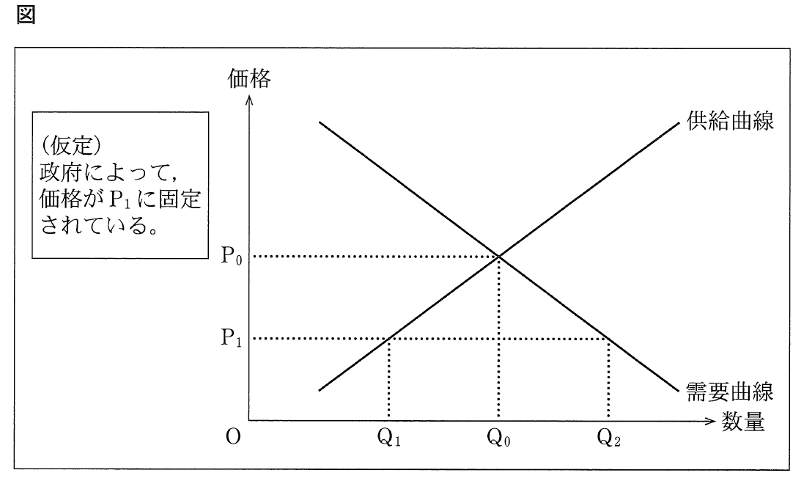
メモ
政府による価格への介入によって、価格がP1に固定されると、取引される財の数量は［ ア ］となる。このとき、この財の市場では［ イ ］が発生していることになる。
＃需要供給曲線
①ア―Q0 イ―超過需要②ア―Q0 イ―超過供給
③ア―Q1 イ―超過需要④ア―Q1 イ―超過供給
⑤ア―Q2 イ―超過需要⑥ア―Q2 イ―超過供給
問５
下線部e【外国為替】に関心をもった生徒は、為替介入には「風に逆らう介入」と「風に乗る介入」があることを知った。ここで、「風に逆らう介入」とは為替レートのそれまでの動きを反転させることを目的とした介入であり、「風に乗る介入」とは為替レートのそれまでの動きを促進することを目的とした介入である。次の図ア～エは介入目的が達成されたと仮定した場合について、円米ドル為替レートを例としてYが考えた模式図である。円売り米ドル買いによる「風に逆らう介入」を意味する図として正しいものを、後の①～④のうちから一つ選べ。
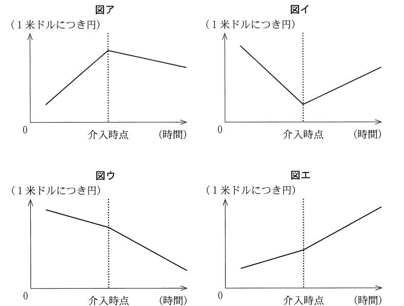
＃国際経済
問６
下線部f【環境保護】に関連して、生徒Xは、地域におけるリサイクルの状況を考える上で、リサイクル率(再資源化個数÷販売個数)という指標を利用できることを学んだ。そこでXは、この指標を用いて、地域Aと地域Bの二つの地域だけから構成されるある国における、ある商品の「基準年」と「基準年の5年後」のリサイクルの状況を考え、次の表を作成した。表は、各年における地域Aと地域Bでの商品のリサイクル率を示している。ただし、商品が販売される地域と再資源化される地域は同一であるものとする。リサイクル率の増加をもってリサイクルが活発化したと評価するとき、地域A、地域B、国全体のうちリサイクルが活発化しているものはどれか。当てはまるものをすべて選び、その組合せとして最も適当なものを、後の①～⑦のうちから一つ選べ。
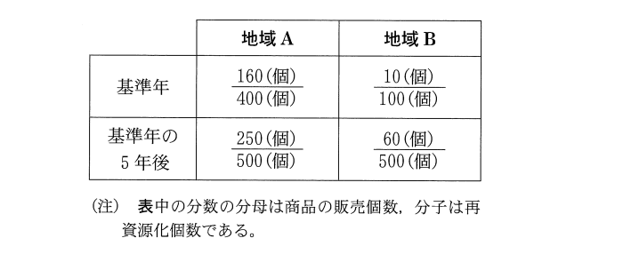
①地域A ②地域B ③国全体 ④地域Aと地域B
⑤地域Aと国全体 ⑥地域Bと国全体 ⑦地域Aと地域Bと国全体
＃計算問題
問７
下線部g【国債保有高】に関連して、生徒Xは、日本国債の保有者の構成比について関心をもった。そこでXは、2011年3月と2021年3月における日本国債の保有者構成比および保有高を調べ、次の図を作成した。図に示された構成比の変化に関する記述として最も適当なものを、後の①～④のうちから一つ選べ。
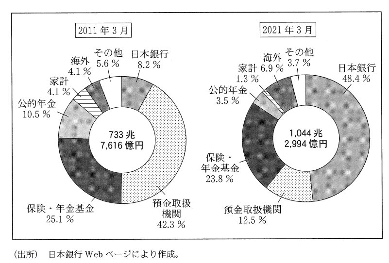
①日本銀行の金融引締め政策を反映しており、日本銀行が日本政府の発行した国債を直接引き受けた結果である。
②日本銀行の金融緩和政策を反映しており、日本銀行が民間金融機関から国債を購入した結果である。
③日本銀行の金融引締め政策を反映しており、日本銀行が民間金融機関に国債を売却した結果である。
④日本銀行の金融緩和政策を反映しており、日本銀行が日本政府の発行した国債を直接引き受けた結果である。
＃失われた三十年 ＃金融政策と銀行
問８
生徒は、下線部h【国内総生産】とその構成について学んだ。そこでYは、日本における2014年度から2015年度にかけての民間最終消費支出と民間企業設備投資の増加について調べ、次のメモを作成した。メモに関する記述として最も適当なものを、後の①～④のうちから一つ選べ。
メモ
○国内総生産は生産面、分配面、支出面の三つの側面からみることができる。
○国内総生産は民間最終消費支出、政府最終消費支出、総固定資本形成、純輸出からなる。
○総固定資本形成は、民間企業設備投資や民間住宅投資などを含む。
○民間最終消費支出は2兆3,211億円増加した。
○民間企業設備投資は3兆1,698億円増加した。
①国内総生産に占める支出割合は、民間最終消費支出より民間企業設備投資の方が小さいため、2015年度のこれら二つの支出項目の対前年度増加率を比較すると、民間企業設備投資の方が高い。
②国内総生産に占める支出割合は、民間最終消費支出より民間企業設備投資の方が大きいため、2015年度のこれら二つの支出項目の対前年度増加率を比較すると、民間企業設備投資の方が高い。
③国内総生産に占める支出割合は、民間最終消費支出より民間企業設備投資の方が小さいため、2015年度のこれら二つの支出項目の対前年度増加率を比較すると、民間最終消費支出の方が高い。
④国内総生産に占める支出割合は、民間最終消費支出より民間企業設備投資の方が大きいため、2015年度のこれら二つの支出項目の対前年度増加率を比較すると、民間最終消費支出の方が高い。
＃フローとストック ＃現代文問題
第３問
※全く見る価値のないリード文省略
問１
下線部a【核兵器による世界的危機】に関連して、生徒Xと生徒は、模擬授業1で核兵器に関するさまざまな条約について学習した。核兵器に関する条約についての記述として誤っているものを、次の①～④のうちから一つ選べ。
①部分的核実験禁止条約では、大気圏内核実験や地下核実験が禁止された。
②包括的核実験禁止条約は、核保有国を含む一部の国が批准せず未発効である。
③核拡散防止条約によれば、核保有が認められる国は5か国に限定されることとなる。
④第一次戦略兵器削減条約では、戦略核弾頭の削減が定められた。
＃戦後国際政治史―ColdWar ＃現代国際政治史―ModernWarfare
問２
生徒Xと生徒Yは、模擬授業1で取り上げられた下線部b【今日でも継続する紛争】に関心をもち、中東での紛争と対立について話し合っている。次の会話文中の空欄［ ア ］～［ ウ ］に当てはまる語句の組合せとして最も適当なものを、後の①～⑧のうちから一つ選べ。
X：パレスチナ地方では、ユダヤ人が中心となってイスラエルを建国したのちに第一次中東戦争が始まったよ。その結果として、多くの人々が難民となったんだ。その後も対立が続き、紛争が生じている。
Y：けれど、和平の動きがみられないわけではないんだ。第四次中東戦争ののち、イスラエルとエジプトとの間で和平条約が締結されているよ。さらに、イスラエルとパレスチナ解放機構との間で［ ア ］が成立し、パレスチナ人による暫定統治がガザ地区とイにおいて開始されたんだ。
X：でも、［ ウ ］が［ イ ］で分離壁の建設を進めるなど、イスラエルとパレスチナの対立は終結していないよね。
①ア オスロ合意 イ ゴラン高原 ウ パレスチナ自治政府
②ア オスロ合意 イ ゴラン高原 ウ イスラエル政府
③ア オスロ合意 イ ヨルダン川西岸 ウ パレスチナ自治政府
④ア オスロ合意 イ ヨルダン川西岸 ウ イスラエル政府
⑤ア プラザ合意 イ ゴラン高原 ウ パレスチナ自治政府
⑥ア プラザ合意 イ ゴラン高原 ウ イスラエル政府
⑦ア プラザ合意 イ ヨルダン川西岸 ウ パレスチナ自治政府
⑧ア プラザ合意 イ ヨルダン川西岸 ウ イスラエル政府
＃世界の紛争
問３
生徒Xと生徒Yは、模擬授業1で扱われた下線部c【戦争の違法化の試み】について話し合っている。次の会話文中の空欄［ ア ］［ イ ］に当てはまる語句の組合せとして最も適当なものを、後の①～④のうちから一つ選べ。
X：国際連盟は紛争の平和的解決と［ ア ］の一環としての制裁とを通じて国際社会の平和と安全を保障しようとしたよね。国際連盟規約において戦争に課された制約は限定的で、戦争の違法化を進める動きが生じたんだ。
Y：それを進めた国際規範に、［ イ ］があるよね。これは、国際関係において国家の政策の手段としての戦争を放棄することを目的としたものだよ。しかし、第二次世界大戦の勃発を抑止できなかったよね。
X：その後、国際連合憲章では、国際関係において武力による威嚇または武力の行使を禁止しているんだよ。これによって、［ イ ］に比べて制度上禁止される国家の行為は拡大したんだ。21世紀になっても武力紛争はなくなっていないので、武力による威嚇や武力の行使の違法化をもっと実効性のあるものにすべきではないのかな。
①ア 勢力均衡 イ 不戦条約
②ア 勢力均衡 イ 国際人道法
③ア 集団安全保障 イ 不戦条約
④ア 集団安全保障 イ 国際人道法
＃国際政治の誕生と発展
問４
生徒Zは、模擬授業で話題１となった下線部d【現在の日本の安全保障に関する法制度】について調べた。日本の安全保障に関する記述として最も適当なものを、次の①～④のうちから一つ選べ。
①日本の重要影響事態法による自衛隊の海外派遣に際しては、日本の周辺地域においてのみ自衛隊の活動が認められる。
②日本のPKO協力法による国連平和維持活動に際しては、自衛隊員の防護のためにのみ武器使用が認められる。
③日本は武器の輸出に関する規制として、防衛装備移転三原則を武器輸出三原則に改めた。
④日本は安全保障に関する重要事項を審議する機関として、内閣総理大臣を議長とする国家安全保障会議を設置した。
＃日本国憲法と国防
問５
模擬授業2では、「委任の連鎖」と「責任の連鎖」という考えに基づいて作成された次の図を用いて、下線部e【日本の統治機構】について説明がされた。「委任の連鎖」とは、有権者から政治家を経て官僚へと政策決定や政策実施を委ねていく関係をいう。また。「責任の連鎖」とは、委任を受けた側が委任をした側に対し委任の趣旨に即した行動をとっているという説明責任を果たしていく関係をいう。図中の矢印アで示された責任に関する憲法上の仕組みとして正しいものを後の記述aかb、矢印で示された責任に関する憲法上の仕組みとして正しいものを後の記述eかdから選び、その組合せとして最も適当なものを、後の①～④のうちから一つ選べ。
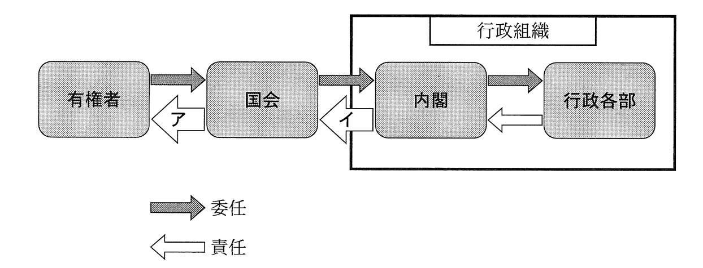
矢印アで示された責任に関する憲法上の仕組み
a両議院の会議の公開と会議録の公表
b国の収入支出の決算の提出
矢印イで示された責任に関する憲法上の仕組み
c弾劾裁判所の設置
d一般国務についての内閣総理大臣の報告
①ア―a イ―c ②ア―a イ―d
③ア―b イ―c ④ア―b イ―d
＃立法府（国会）
問６
下線部f【有権者】に関連して、模擬授業2では、選挙権年齢や民法の成年年齢の引下げをうけ、2021年には少年法も改正されたという説明がされた。この少年法改正に関心をもった生徒Xは、法務省のWebページで改正の内容について調べ、次のメモを作成した。メモ中の空欄［ ア ］～［ ウ ］に当てはまる語句の組合せとして最も適当なものを、後の①～⑧のうちから一つ選べ。
1.2021年改正前の少年法の概要
・少年(20歳未満の者)の事件は、全件が［ ア ］に送られ、［ ア ］が処分を決定する。
・16歳以上の少年のときに犯した故意の犯罪行為により被害者を死亡させた罪の事件については、原則として［ イ ］への逆送決定がされる。逆送決定がされた事件は、［ イ ］によって起訴される。
・少年のときに犯した罪については、犯人が誰であるかがわかるような記事・写真等の報道(推知報道)が禁止される。
2.2021年少年法改正のポイント
・［ ウ ］以上の少年を「特定少年」とし、引き続き少年法を適用する。
・原則として逆送しなければならない事件に、特定少年のときに犯した死刑、無期または短期1年以上の懲役・禁錮に当たる罪の事件を追加する。
・特定少年のときに犯した事件について起訴された場合には、推知報道の禁止が解除される。
①ア 地方裁判所 イ 検察官 ウ 14歳
②ア 地方裁判所 イ 検察官 ウ 18歳
③ア 地方裁判所 イ 弁護士 ウ 14歳
④ア 地方裁判所 イ 弁護士 ウ 18歳
⑤ア 家庭裁判所 イ 検察官 ウ 14歳
⑥ア 家庭裁判所 イ 検察官 ウ 18歳
⑦ア 家庭裁判所 イ 弁護士 ウ 14歳
⑧ア 家庭裁判所 イ 弁護士 ウ 18歳
＃司法府（裁判所）
問７
下線部g【世論】に関連して、模擬授業2では、世論形成における個人やマスメディアの表現活動の意義について次の資料を用いて説明がされた。資料から読みとれる内容として最も適当なものを、後の①～④のうちから一つ選べ。
判例1：最高裁判所民事判例集40巻4号
「主権が国民に属する民主制国家は、その構成員である国民がおよそ一切の主義主張等を表明するとともにこれらの情報を相互に受領することができ、その中から自由な意思をもつて自己が正当と信ずるものを採用することにより多数意見が形成され、かかる過程を通じて国政が決定されることをその存立の基礎としているのであるから、表現の自由、とりわけ、公共的事項に関する表現の自由は、特に重要な憲法上の権利として尊重されなければならないものであり、憲法21条1項の規定は、その核心においてかかる趣旨を含むものと解される。」
判例2：最高裁判所刑事判例集23巻11号
「報道機関の報道は、民主主義社会において、国民が国政に関与するにつき、重要な判断の資料を提供し、国民の『知る権利』に奉仕するものである。したがつて、思想の表明の自由とならんで、事実の報道の自由は、表現の自由を規定した憲法21条の保障のもとにあることはいうまでもない。」
①判例1によれば、個人の表現の自由は、民主主義過程を維持するためではなく個人の利益のために、憲法第21条第1項によって保障される。
②判例1によれば、公共的事項にかかわらない個人の主義主張の表明は、憲法第21条第1項によっては保障されない。
③判例2によれば、報道機関の報道の自由は、国民が国政に関与する上で必要な判断資料の提供に寄与するため、憲法第21条によって保障される。
④判例2によれば、思想の表明とはいえない単なる事実の伝達は、憲法第21条によっては保障されない。
＃現代文問題 ＃日本国憲法と人権（自由権） ＃新しい人権
問８
下線部h【二院制】について、生徒X、生徒Y、生徒Zは、模擬授業2の後の休憩時間に議論をしている。次の会話文中の空欄ア～ウに当てはまる語句の組合せとして最も適当なものを、後の①～⑧のうちから一つ選べ。
X：模擬授業でも説明があった両議院の違いを比較すると、［ ア ］の方が議員の任期が短く解散もあり、直近の民意を反映しやすい議院だということができそうだね。
Y：そうした性格の違いが、両議院の権限の違いに影響しているともいえそうだね。両議院の議決が異なった場合に一定の条件を満たせば、［ イ ］を国会の議決とすることが憲法上認められているよ。
Z：でも、憲法はなんでもかんでも［ イ ］を優先させているというわけではないよ。たとえば、［ ウ ］については両議院の権限は対等だよね。
X：法律案の議決についても、［ イ ］を国会の議決とするには、他の場合に比べ厳しい条件が設けられているね。法律案の議決に関する限り、もう一方の議院は、［ ア ］の決定に対して、慎重な審議を求めるにとどまらず、抑制を加える議院として機能しうるといえそうだね。
①ア 衆議院 イ 衆議院の議決 ウ 条約締結の承認
②ア 衆議院 イ 衆議院の議決 ウ 憲法改正の提案
③ア 衆議院 イ 参議院の議決 ウ 条約締結の承認
④ア 衆議院 イ 参議院の議決 ウ 憲法改正の提案
⑤ア 参議院 イ 衆議院の議決 ウ 条約締結の承認
⑥ア 参議院 イ 衆議院の議決 ウ 憲法改正の提案
⑦ア 参議院 イ 参議院の議決 ウ 条約締結の承認
⑧ア 参議院 イ 参議院の議決 ウ 憲法改正の提案
＃立法府（国会）
第４問
※全く見る価値のないリード文省略
問１
下線部aに関連して、生徒Xと生徒は、2015年に国連(国際連合)でSDGsが採択されるまでの経緯について関心をもった。XとYは、環境と開発に関して話し合われた国際的な会議について分担して調べ、次のスライドa～dにまとめた。これらのスライドを、スライド中の会議が開催された年の古いものから順に並べたものとして正しいものを、後の①～⑧のうちから一つ選べ。
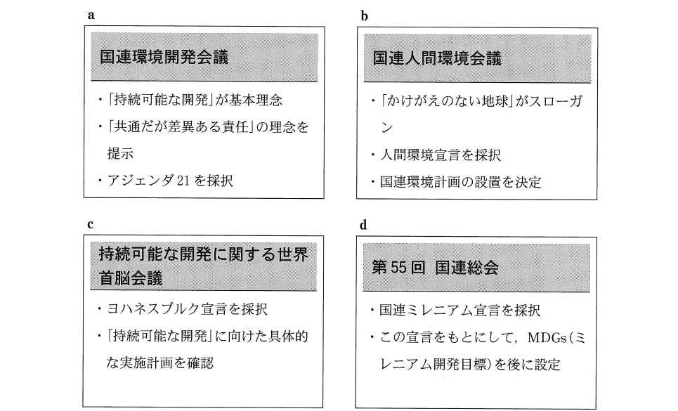
①a→b→c→d ②a→b→d→c ③b→a→c→d ④b→a→d→c
⑤c→d→a→b ⑥c→d→b→a ⑦d→c→a→b ⑧d→c→b→a
＃公害問題、環境問題
問２
下線部bに関連して、生徒Xと生徒は、地球環境問題の取組みに関する歴史的展開を踏まえて、京都議定書(1997年採択)、パリ協定(2015年採択)の位置づけや内容について調べてみた。この二つの条約に関する記述として最も適当なものを、次の①～④のうちから一つ選べ。
①京都議定書では、「共通だが差異ある責任」という理念に基づいて、環境を犠牲にして経済発展を成した先進国のみに地球環境保護の責任があるとされた。他方、パリ協定では、すべての国に地球環境保護の責任があることが合意され、すべての締約国に温室効果ガスを削減する義務が課された。
②京都議定書、パリ協定ともに、地球環境保護が将来世代の発展にとって不可欠であり、現在の成長よりも地球環境保護を優先すべきとする「持続可能な開発」という理念に基づいている。また、いずれの条約でも、先進国。発展途上国を問わず、すべての締約国に同様に温室効果ガス削減義務が課されている。
③京都議定書では、現在の成長よりも将来世代の発展を優先すべきとする「持続可能な開発」という理念に基づいて、全人類の問題として一律の温室効果ガス削減目標が課されている。他方、パリ協定では、将来世代の発展は各締約国が決定する問題であるとして、削減目標は各国が自主的に決定することとした。
④京都議定書と異なり、パリ協定では、すべての締約国が温室効果ガス削減に取り組むことを義務づける仕組みが採用されている。ただし、パリ協定でも、先進国に発展途上国向けの資金支援を義務づけるなど、「共通だが差異ある責任」という理念に適合するルールが用意されている。
＃公害問題、環境問題
問３
下線部cに関連して、生徒Xは、SDGsの達成に貢献する国際機関の仕組みに関心をもち、調べてみた。国際機関の仕組みに関する記述として最も適当なものを、次の①～④のうちから一つ選べ。
①規約人権委員会(人権規約委員会)は、市民的及び政治的権利に関する国際規約(B規約)上の人権を侵害する国が同規約の選択議定書を批准していなくとも同規約の締約国であれば、被害者からの通報を検討することができる。
②人権理事会では、人権に対する重大かつ組織的な侵害を犯した場合に、総会決議によって理事国としての資格が停止されることがある。
③労働条件の改善を目標の一つとするILO(国際労働機関)は、労働者の声が反映されるよう、政府代表と労働者代表との二者構成で運営されている。
④国際社会の平和と安全の維持に主要な責任を有する国連安全保障理事会では、国連分担金の比率上位5か国が常任理事国となるため、常任理事国に決議の採決における特権的な地位が認められている。
＃国際連合 ＃人権の拡大
問４
下線部dに関連して、生徒Xは、SDGsの達成に向けて企業がどのような取組みを行っているのかについて調べ、次のメモを作成した。メモ中の空欄［ ア ］には後の語句aかb、空欄［ イ ］には後の語句eかdのいずれかが当てはまる。空欄［ ア ］・［ イ ］に当てはまるものの組合せとして最も適当なものを、後の①～④のうちから一つ選べ。
グローバル企業は、世界に広がる［ ア ］を形成し、さまざまな経営資源の効率的な調達を進めています。しかしながら、こうした原材料の調達から消費者の手元に届くまでの一連の流れである［ ア ］が広がり複雑化していく中で、発展途上国の労働者が劣悪な環境や不当な労働条件で働かされることにより貧困に陥っているとの指摘もあります。
企業は、こうした問題に対処する責任を有していると考えられ、実際さまざまな取組みがみられます。その一つとして注目される取組みがです。［ イ ］とは、発展途上国産の原材料や製品について公正な価格で継続的に取引することにより、立場の弱い発展途上国の労働者の生活改善や自立をめざす取組みのことです。
アに当てはまる語句
aセーフティネット
bサプライチェーン
イに当てはまる語句
cフェアトレード
dメセナ
①ア―a イ―c ②ア―a イ―d ③ア―b イ―c ④ア―b イ―d
＃失われた三十年 ＃南北問題
問５
下線部eに関連して、生徒Xと生徒は、各国における対外債務の問題について、複数の指標を用いて考察することにした。次のメモは、XとYが、いくつかある指標の中から今回の考察で重要と思われるものを整理したものであり後の表は、取り上げる国のデータをまとめたものである。メモと表に基づいて考察した後の記述a～cのうち、正しいものはどれか。当てはまるものをすべて選び、その組合せとして最も適当なものを、後の①～⑦のうちから一つ選べ。
メモ
○債務負担の度合いは、対外債務残高の対輸出額比と対外債務残高の対GNI比から判断できるものとする。
※対外債務残高
公的部門の長期対外債務、民間部門の長期対外債務、短期対外債務およびIMF(国際通貨基金)からの融資の合計。
※対外債務残高の対輸出額比
財・サービスの輸出額に対する対外債務残高の比率。ここでの輸出額には海外からの純所得を含む。当該国の外貨獲得能力に対して対外債務がどれだけ累積しているかを示す指標。
※対外債務残高の対GNI比
GNI(国民総所得)に対する対外債務残高の比率。当該国の経済の大きに対して対外債務がどれだけ累積しているかを示す指標。
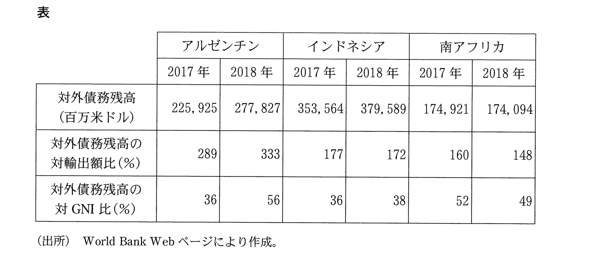
a アルゼンチンでは、2017年から2018年にかけて、対外債務残高が増加している。また、対外債務残高の対輸出額比と対外債務残高の対GNI比とがともに上昇しており、アルゼンチンの債務負担の度合いは高まったと判断できる。
b インドネシアでは、2017年から2018年にかけて、対外債務残高が増加している。また、対外債務残高の対輸出額比と対外債務残高の対GNI比とがともに低下しており、インドネシアの債務負担の度合いは高まったと判断できる。
c 南アフリカでは、2017年から2018年にかけて、対外債務残高が減少している。また、対外債務残高の対輸出額比と対外債務残高の対GNI比とがともに低下しており、南アフリカの債務負担の度合いは高まったと判断できる。
①a ②b ③c ④aとb ⑤aとc ⑥bとc ⑦aとbとc
＃現代文問題
問６
下線部fに関連して、生徒Xと生徒Yは、発表資料の一部として次のメモを作成し、メモをみながら議論をしている。後の会話文中の空欄［ ア ］には後の記述aかb、空欄［ イ ］には後の記述cかdのいずれかが当てはまる。空欄［ ア ］・［ イ ］に当てはまるものの組合せとして最も適当なものを、後の①～④のうちから一つ選べ。
【SDGsの特徴】
○相互に関連する問題であるとの認識から、国連において加盟国の総意によって17の目標が幅広く提示された。
○これらの目標は2030年までに達成がめざされる。それぞれの目標をどう達成するかは各国が決定する。
X：17もの目標を幅広く提示するSDGsでは、それぞれの目標が他の目標に関連することになるため、包括的に取組みを進める必要があるという考え方がとられているんだね。また、それぞれの目標をどう達成するかは各国に委ねられており、各国の自主性が重視されている点も特徴的だね。
Y：ただ、相互に関係しているとしてもかなり幅広い目標だし、各目標をどう達成するかを各国が決定できるのなら、どれほどの意味があるか疑問だな。少しずつでも、一つ一つ目標をどう達成するか具体的に定めて条約で約束し、守らない国に対しては責任を追及することで目標の達成を図っていくべきじゃないかな。
X：そうかな。［ ア ］。
Y：そんなにうまくいくのかな。とくに、各国の経済発展を阻害するような目標を国際社会で達成するには困難が伴うと思うよ。たとえば、環境保護と経済発展をめぐる発展途上国と先進国との利害対立が、SDGsの目標の一つである気候変動問題への国際社会の対処を難しくしていることは「政治・経済」の授業でも学習したよね。
Xたしかに、そこが国際的な問題の難しさだけど、そうした事情を踏まえた点にSDGsの意義があるのではないかな。［ イ ］。
［ ア ］に当てはまる記述
a SDGsには、国家の対応能力の限界が問題となるものも多いので違反を責めるよりも、各国の自主的な取組みを国際社会が促すとともに、それをサポートする体制を作ることが重要だよね
b 良好な地球環境が経済発展を促すように、経済発展につながる要因はさまざまだよね。SDGsが経済発展によって貧困からの脱却を図ることに専念した目標である以上、経済発展を促進するための包括的な取組みが不可欠だよね
［ イ ］に当てはまる記述
c SDGsの目標の多くは先進国ではすでに達成されており、貧困など多くの問題を抱えている途上国を対象に目標を設定したものだから、ターゲットを絞ることで達成しやすい目標を設定したのだと思うよ
d SDGsは、各国にそれぞれ優先すべき課題があることを踏まえて、できるところから目標を追求できる仕組みを作ったことが重要だよね。包括的な目標を示し、達成方法を各国に委ねたのはそのためだと思うよ
＃現代文問題 ＃公害問題、環境問題
下線部. 元の問題には下線部の中身は表記されていなかったので追記 ↩
全問解答、配点
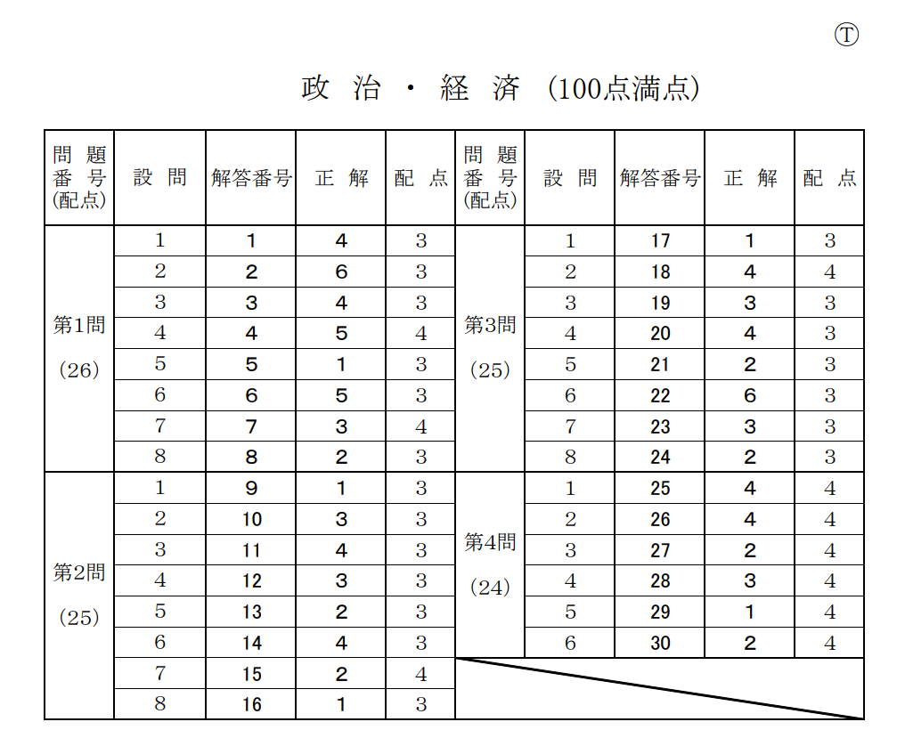